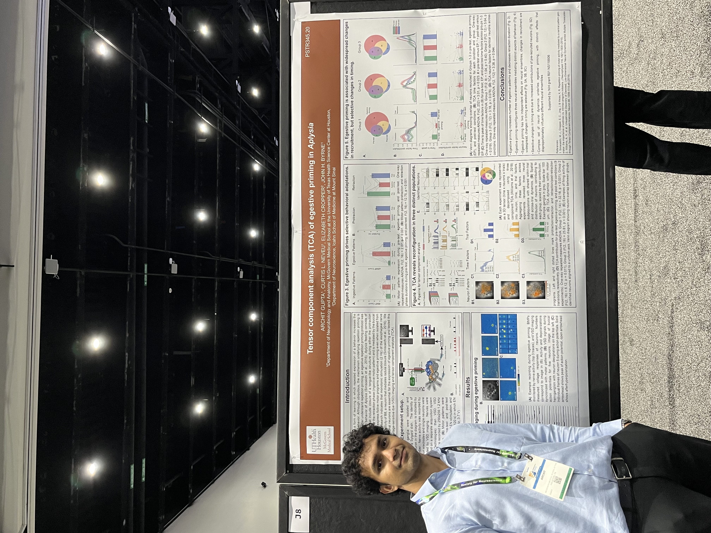
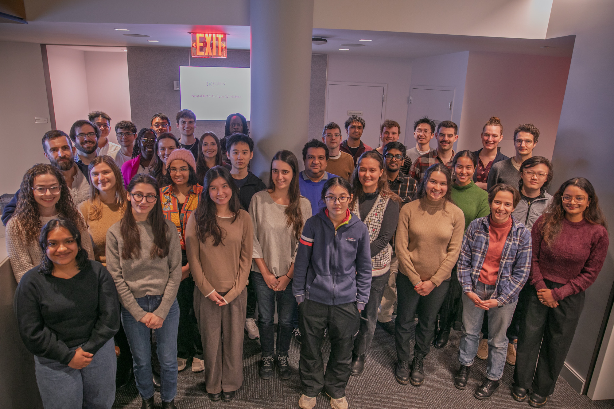

- Learning & memory
- Neural variability
- Decision making
- Neural circuits
- Population encoding
Investigating circuit mechanisms of learning and memory
Hi, my name is Archit. I am a second-year Ph.D. student in the Byrne lab at the Universiy of Texas Health Science Center at Houston. I am interesting in developing and applying computational tools to understand how neural circuit dynamics support learning and memory. Currently, I study the feeding circuit of the invertebrate Aplysia Californica.
Background
[Add a short paragraph here — e.g. where you grew up, your undergrad institution and major, how you got into neuroscience, and what drew you to the MD Anderson UTHealth program.]
Publications
Peer-reviewed articles and preprints. See my Google Scholar for a complete list.
Projects
Open-source tools, analysis pipelines, and explorations in computational neuroscience.
Space Race Infographics
A data visualization project exploring the Space Race through a series of custom data graphics.
Blog
Notes on research methods, computational neuroscience, and the PhD journey.
What Tensor Decomposition Reveals About How Circuits Learn
An accessible introduction to TCA and why it's a powerful lens for understanding how neural populations change with experience — no linear algebra prerequisite required.
A Practical Guide to Spike Train Preprocessing
From raw extracellular recordings to clean spike trains: contamination detection, Gaussian kernel convolution, and choosing the right bin width for your analysis.
PCA vs. NMF vs. TCA: Choosing the Right Decomposition
A comparison of dimensionality reduction approaches for neural data, with code examples and practical guidance on when each method shines.
Why Aplysia? A Defense of Invertebrate Neuroscience
How a sea slug with 20,000 neurons can teach us fundamental principles about learning and memory that translate across the animal kingdom.
Curriculum Vitae
A summary of my academic and research background. Download the full version below.
Education
Ph.D. in Neuroscience
Advisor: Dr. John H. Byrne. Research on neural population dynamics and motor learning in Aplysia using tensor decomposition.
B.Eng. in Computer Science
Research Experience
Graduate Student
Graduate Rotation Student
Computational Biology Intern
Undergraduate Researcher
Research Assistant
Research Assistant
Publications
Lawson N.M., Ye L., Cho C.Y., Zhao B., Mitchell T., Martín-Barrio I., Beernaert B., Gupta A., et al. Recurrent ERBB2 alterations are associated with esophageal adenocarcinoma brain metastases. medRxiv [Preprint]. doi:10.1101/2025.02.19.25322558
Gupta A., Easwaran A. A low-cost lane-following algorithm for cyber-physical robots. arXiv [Preprint]. arXiv:2208.10765
Presentations
Gupta A., Neveu C., Cropper E.C., Byrne J.H. Tensor component analysis of egestive priming in Aplysia. Poster, Society for Neuroscience Annual Meeting, San Diego, CA.
Gupta A., Neveu C., Byrne J.H. Dimensionality reduction reveals neuronal ensembles mediating motor behavior. Oral, Neuroscience Fall Symposium>, Houston, TX.
Gupta A., Pan Y., Van Loo P. Finding doubles in malignant peripheral nerve sheath tumors. Oral, Cancer Biology Student Seminar Series, Houston, TX.
Gupta A., Aili A. Predicting precipitable water vapour using explainable machine learning. Poster, 22nd Community Modeling and Analysis System Conference, Chapel Hill, NC.
Gupta A., Easwaran A. A low-cost lane-following algorithm for cyber-physical robots. Oral, 10th International Conference of Undergraduate Research, Singapore.
Awards
Travel Scholarship, Neural Data Analysis Workshop, Flatiron Institute
Trainee Professional Development Award, Society for Neuroscience
First Place, Pre-Candidacy Elevator Pitch, Neuroscience Program Retreat
Third Place, Pre-Candidacy Student Seminar Series, Cancer Biology Program
Travel Award, Neuroscience Program
First Place, Hanna Student Poster Award, Community Modeling and Analysis System Conference
First Place, AI Space Challenge
President's Research Scholar, Nanyang Technological University
Leadership
Vice Chair, Hackers for Charity
Honorary General Secretary
Photos
Conferences, workshops, and moments from the research journey.

